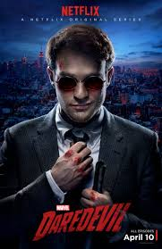
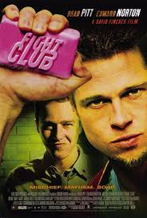
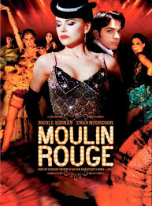

I am a Ruby Developer who loves front
|  |
DaredevilAveugle depuis l’enfance, mais doté de sens incroyablement développés, Matt combat l’injustice le jour en tant qu’avocat et la nuit en surveillant les rue de Hell’s Kitchen, à New York, dans le costume du super-héros Daredevil. Adaptation du comic book Marvel homonyme. |
|  |
Fight ClubLe narrateur, sans identité précise, vit seul, travaille seul, dort seul, mange seul ses plateaux-repas pour une personne comme beaucoup d'autres personnes seules qui connaissent la misère humaine, morale et sexuelle. C'est pourquoi il va devenir membre du Fight club, un lieu clandestin ou il va pouvoir retrouver sa virilité, l'échange et la communication. Ce club est dirigé par Tyler Durden, une sorte d'anarchiste entre gourou et philosophe qui prêche l'amour de son prochain. |
|  |
Moulin RougeA la fin du XIXe siècle, dans le Paris de la Belle Epoque, Christian, un jeune poète désargenté, s'installe dans le quartier de Montmartre et découvre un univers où se mêlent sexe, drogue et french cancan, mais se rebelle contre ce milieu décadent en menant une vie de bohème. |